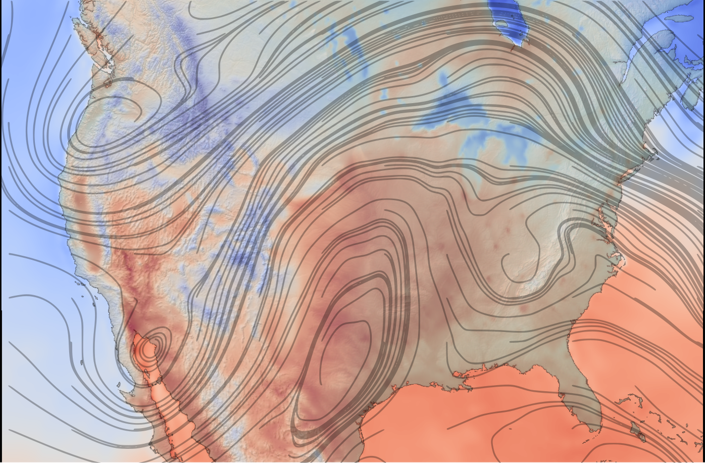

Last Updated: 2021-10-28
What you will build
In this codelab, you are going to deploy an auto-scaling High Performance Computing (HPC) cluster on Google Cloud with the Slurm job scheduler. You will use an example Terraform deployment that deploys this cluster with WRF® installed via Spack. Then, you will use this infrastructure to run the CONUS 2.5km benchmark or the CONUS 12km benchmark.
What you will learn
- How to build a VM image that is compatible with Slurm-GCP and the RCC solutions to run WRF® simulations
- How to deploy a cloud-native HPC cluster with the Slurm job scheduler
- How to run WRF® in parallel on Google Cloud using a Slurm batch job
What you will need
- Gmail Account with an SSH key attached, or Google Workspace, Cloud Identity
- Google Cloud Platform Project with Billing enabled
- Project owner role on your GCP Project
- Sufficient Compute Engine Quota (480 c2 vCPUs and 500 GB PD-Standard Disk)
- RCC-WRF Deployment
In this section, you will deploy an auto-scaling HPC cluster including the Slurm job scheduler. This is identical to the High Quota option, except that the machine type used is smaller and the number of vCPUs used is smaller.
- Open your Cloud Shell on GCP.
- Clone the Research Computing Cloud Applications repository from Fluid Numerics
cd ~ git clone https://github.com/FluidNumerics/rcc-apps.git
- Change to the wrf/tf directory:
cd ~/rcc-apps/wrf/tf
- Create and review a terraform plan. Set the environment variables
RCC_NAME,RCC_PROJECT, andRCC_ZONEto specify the name of your cluster, your GCP project, and the zone you want to deploy to.
export RCC_PROJECT=<PROJECT ID> export RCC_ZONE=<ZONE> export RCC_NAME="wrf-small"
- The first time you run terraform you must run the `init` command:
terraform init
- Create the plan with the make command, which will run `terraform`
make plan
- Deploy the cluster. The setup process can take up to 5 minutes.
make apply
- SSH to the login node created in the previous step. You can see this node in the previous step (probably called wrf-small-login0). You can do this by clicking on the SSH button next to the list of VM Instances in the console menu item Compute Engine -> VM instance.
Option: This pair of gcloud commands will figure out the login node name and SSH into it:
``` console
export CLUSTER_LOGIN_NODE=$(gcloud compute instances list --zones ${WRF_ZONE} --filter="name ~ .*login" --format="value(name)" | head -n1)
gcloud compute ssh ${CLUSTER_LOGIN_NODE} --zone ${WRF_ZONE}
```
- Once you are connected to the login node, to verify your cluster setup, check that the wrf is available
$ spack find wrf ==> In environment /opt/spack-pkg-env ==> Root specs wrf@4.2 ==> 1 installed package -- linux-centos7-x86_64 / intel@2021.3.0 ------------------------ wrf@4.2
- Verify that
/apps/share/conus-12kmhas the contents listed below.
$ ls -1 /apps/share/conus-12km/ FILE:2018-06-17_00 FILE:2018-06-17_03 FILE:2018-06-17_06 FILE:2018-06-17_09 FILE:2018-06-17_12 geo_em.d01.nc geogrid.log met_em.d01.2018-06-17_00:00:00.nc met_em.d01.2018-06-17_03:00:00.nc met_em.d01.2018-06-17_06:00:00.nc met_em.d01.2018-06-17_09:00:00.nc met_em.d01.2018-06-17_12:00:00.nc metgrid.log namelist.input namelist.wps ungrib.log wrfbdy_d01 wrfinput_d01
To run the CONUS 12km benchmark, you will submit a Slurm batch job. The input decks for this benchmark are included in the wrf-gcp VM image under /apps/share/benchmarks/conus-12km.
For this section, you must be SSH connected to the login node of the cluster
- Copy the example wrf-conus.sh batch file from /apps/share
cp /apps/share/wrf-conus12.sh ~/
- Submit the batch job using sbatch, specifying the number of MPI tasks you want to launch with using the
--ntasksflag. In the example below, we are using 24 MPI tasks. With c2-standard-8 instances, the cluster will provision 3 nodes and distribute the tasks evenly across these compute nodes.
sbatch --ntasks=24 wrf-conus12.sh
- Wait for the job to complete. This benchmark is configured to run a 2-hour forecast, which takes about 6 minutes to complete with 24 ranks. You can monitor the status of your job with
squeue. - When the job completes, check the contents of rsl.out.0000 to verify that you see the statement "wrf: SUCCESS COMPLETE WRF". The numeric suffix will be different if you've run the job more than once, e.g., you got a config setting wrong and had to rerun it.
$ tail -n1 ${HOME}/wrf-benchmark/rsl.out.0000
d01 2018-06-17_06:00:00 wrf: SUCCESS COMPLETE WRF
In this section, you will deploy an auto-scaling HPC cluster including the Slurm job scheduler in
- Open your Cloud Shell on GCP.
- Clone the Research Computing Cloud Applications repository from Fluid Numerics
cd ~ git clone https://github.com/FluidNumerics/rcc-apps.git
- Change to the wrf/tf directory:
cd ~/rcc-apps/wrf/tf
- Create and review a terraform plan. Set the environment variables
RCC_NAME,RCC_PROJECT, andRCC_ZONEto specify the name of your cluster, your GCP project, and the zone you want to deploy to.
export RCC_PROJECT=<PROJECT ID> export RCC_ZONE=<ZONE> export RCC_NAME="wrf-large"
- If you did not do it above, you must run `terraform init` to start up terraform:
terraform init
- Create the plan with the make command.
make plan
- Deploy the cluster. The setup process can take up to 5 minutes.
make apply
- SSH to the login node created in the previous step. You can see this node in the previous step (probably called wrf-large-login0). You can do this by clicking on the SSH button next to the list of VM Instances in the console menu item Compute Engine -> VM instance.
Option: This pair of gcloud commands will figure out the login node name and SSH into it:
``` console
export CLUSTER_LOGIN_NODE=$(gcloud compute instances list --zones ${WRF_ZONE} --filter="name ~ .*login" --format="value(name)" | head -n1)
gcloud compute ssh ${CLUSTER_LOGIN_NODE} --zone ${WRF_ZONE}
```
The second command should result in you being connected to the Slurm Login node.
- Once you are connected to the login node, to verify your cluster setup, check that the wrf module is available.
$ spack find wrf ==> In environment /opt/spack-pkg-env ==> Root specs wrf@4.2 ==> 1 installed package -- linux-centos7-x86_64 / intel@2021.3.0 ------------------------ wrf@4.2
- Verify that
/apps/share/conus-2.5kmhas the contents listed below.
$ ls -1 /apps/share/conus-2.5km FILE:2018-06-17_00 FILE:2018-06-17_03 FILE:2018-06-17_06 FILE:2018-06-17_09 FILE:2018-06-17_12 geo_em.d01.nc geogrid.log gfs.0p25.2018061700.f000.grib2 gfs.0p25.2018061700.f003.grib2 gfs.0p25.2018061700.f006.grib2 gfs.0p25.2018061700.f009.grib2 gfs.0p25.2018061700.f012.grib2 met_em.d01.2018-06-17_00:00:00.nc met_em.d01.2018-06-17_03:00:00.nc met_em.d01.2018-06-17_06:00:00.nc met_em.d01.2018-06-17_09:00:00.nc met_em.d01.2018-06-17_12:00:00.nc metgrid.log namelist.input namelist.wps ungrib.log wrfbdy_d01 wrfinput_d01
To run the CONUS 2.5km benchmark, you will submit a Slurm batch job. The input decks for this benchmark are included in the wrf-gcp VM image under /apps/share/benchmarks/conus-2.5km.
For this section, you must be SSH connected to the login node of the cluster
- Copy the example wrf-conus.sh batch file from /apps/share
cp /apps/share/wrf-conus2p5.sh ~/
- Submit the batch job using sbatch, specifying the number of MPI tasks you want to launch with using the
--ntasksflag. In the example below, we are using 24 MPI tasks. With c2-standard-8 instances, the cluster will provision 3 nodes and distribute the tasks evenly across these compute nodes.
sbatch --ntasks=480 wrf-conus12.sh
- Wait for the job to complete. This benchmark is configured to run a 6-hour forecast, which takes about 1 hour to complete with 480 ranks. You can monitor the status of your job with
squeue. - When the job completes, check the contents of rsl.out.0000 to verify that you see the statement "wrf: SUCCESS COMPLETE WRF". The numeric suffix will be different if you've run the job more than once, e.g., you got a config setting wrong and had to rerun it.
$ tail -n1 ${HOME}/wrf-benchmark/rsl.out.0000
d01 2018-06-17_06:00:00 wrf: SUCCESS COMPLETE WRF
In this codelab, you created an auto-scaling, cloud-native HPC cluster and ran a parallel WRF® simulation on Google Cloud Platform!
Cleaning up
To avoid incurring charges to your Google Cloud Platform account for the resources used in this codelab:
Delete the project
The easiest way to eliminate billing is to delete the project you created for the codelab.
Caution: Deleting a project has the following effects:
- Everything in the project is deleted. If you used an existing project for this codelab, when you delete it, you also delete any other work you've done in the project.
- Custom project IDs are lost. When you created this project, you might have created a custom project ID that you want to use in the future. To preserve the URLs that use the project ID, such as an appspot.com URL, delete selected resources inside the project instead of deleting the whole project.
If you plan to explore multiple codelabs and quickstarts, reusing projects can help you avoid exceeding project quota limits.
- In the Cloud Console, go to the Manage resources page.
Go to the Manage resources page - In the project list, select the project that you want to delete and then click Delete
 .
. - In the dialog, type the project ID and then click Shut down to delete the project.
Delete the individual resources
- Open your cloud shell and navigate to the wrf example directory
cd ~/rcc-apps/wrf/tf- Run make destroy to delete all of the resources.
make destroy